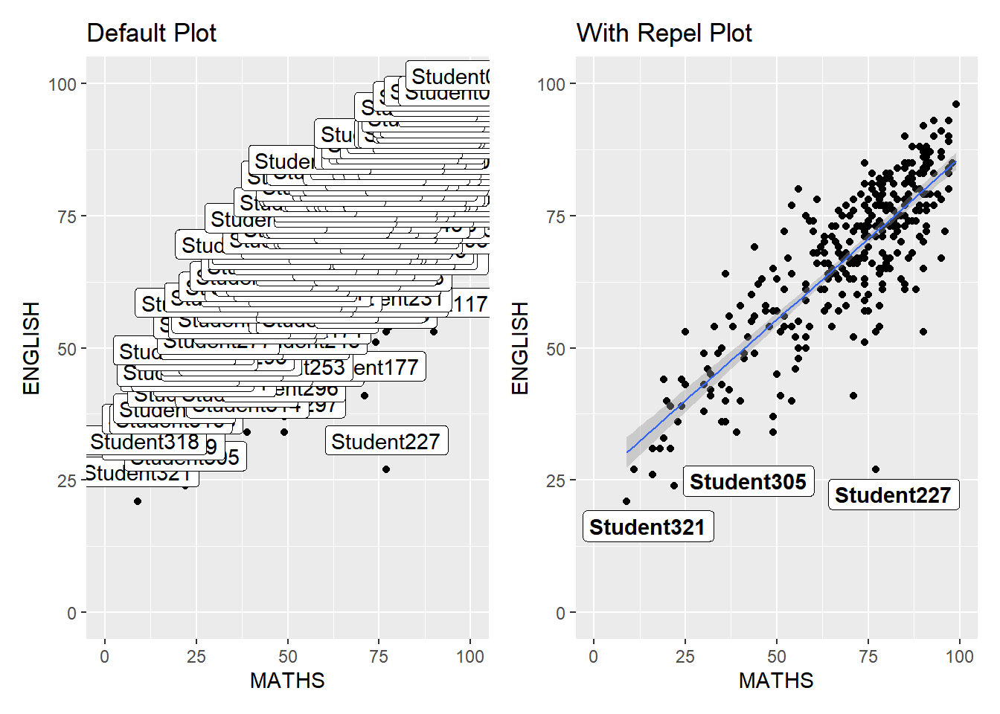
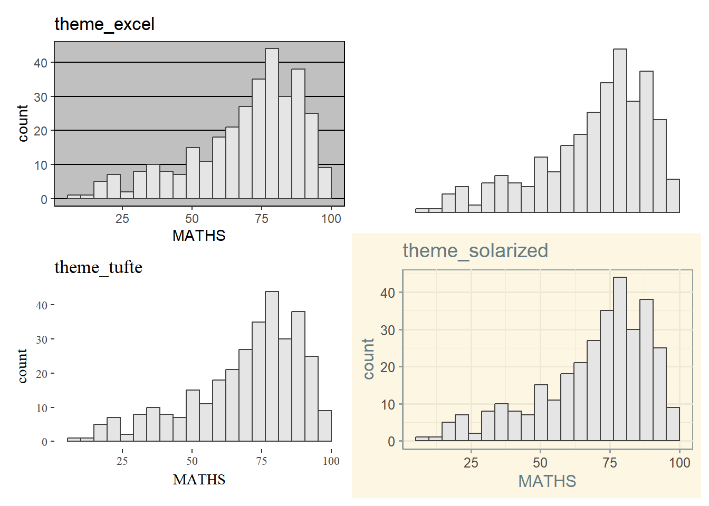
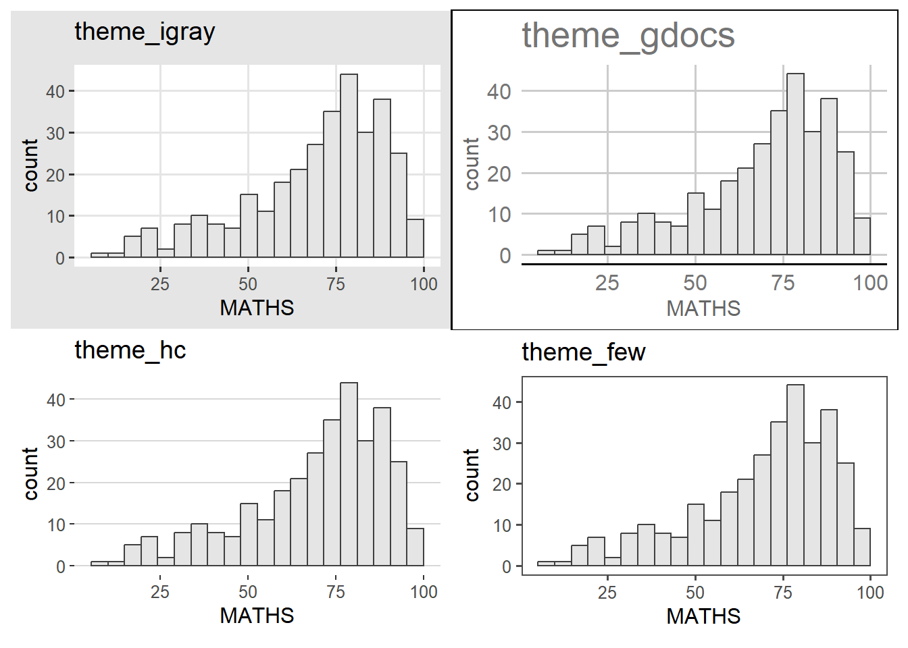

pacman::p_load(ggrepel, patchwork,
ggthemes, hrbrthemes,
tidyverse,stringr)Hands-On Exercise 2: Beyond ggplot2 Fundamentals
2: 1 Overview
In this chapter, several ggplot2 extensions were used to create a more elegant and effective statistical graphics. By the end of this exercise, the following will be performed:
- Control the placement of annotation on a graph by using functions provided in ggrepel package
- Create professional publication quality figure by using functions provided in ggthemes and hrbrtheme packages
- Plot composite figure by combing ggplot2 graphs by using patchwork package
2: 2 Getting started
2: 2.1 Install and Load the Required Libraries
In this exercise, besides tidyverse (Explored in Hands-on Exercised 1), four R packages will be used. They are:
- ggrepel: an R package providing geoms for ggplot2 to repel overlapping text labels
- ggthemes: an R package providing some extra themes, geoms, and scales for ggplot2
- hrbrthemes: an R package providing typography-centric themes and theme components for ggplot2
- patchwork: an R package for preparing composite figure created using ggplot2
Code chunk below will be used to check if these packages have been installed and also load them onto my working R environment.
2: 2.2 Importing Data
For the purpose of this exercise, a data file called Exam_data will be used. It consists of year end examination grades of a cohort of primary 3 students from a local school. It is in csv file format.
The code chunk below imports exam_data.csv into R environment by using read_csv() function of readr package. readr is one of the tidyverse package.
exam_data <- read_csv("data/Exam_data.csv")There are a total of seven attributes in the exam_data tibble data frame. Four of them are categorical data type and the other three are in continuous data type.
- Categorical Attributes: ID, CLASS, GENDER and RACE.
- Continuous Attributes: MATHS, ENGLISH and SCIENCE.
2: 3 Beyond ggplot Annotation: ggrepel
One of the challenge in plotting statistical graph is annotation, especially with large number of data points.
ggplot(data=exam_data,
aes(x = MATHS,
y = ENGLISH)) +
geom_point() +
geom_smooth(method=lm,
linewidth=0.5) +
geom_label(aes(label = ID),
hjust = .5,
vjust = -.5) +
coord_cartesian(xlim=c(0,100),
ylim=c(0,100)) +
ggtitle("English scores versus Maths scores for Primary 3")ggrepel  is an extension of ggplot2 package which provides
is an extension of ggplot2 package which provides geoms for ggplot2 to repel overlapping text as in the examples below.

We simply replace geom_text() by geom_text_repel() and geom_label() with geom_label_repel().
2: 3.1 Working with ggrepel

Tip
Using the Repel code modifies the Default Plot such that only non-overlapping labels are shown and the Best-fit Curve is visible now as compared to being blocked by all the labels in the Default Plot.
Note
The code uses patchwork for easier comparisons between graphs. Further explanation on how to create it can be found in Section 2.5.1
ggplot(data=exam_data,
aes(x = MATHS,
y = ENGLISH)) +
geom_point() +
geom_smooth(method=lm,
linewidth=0.5) +
geom_label(aes(label = ID),
hjust = .5,
vjust = -.5) +
coord_cartesian(xlim=c(0,100),
ylim=c(0,100)) +
ggtitle("Default")ggplot(data=exam_data,
aes(x = MATHS,
y = ENGLISH)) +
geom_point() +
geom_smooth(method = lm,
linewidth = 0.5) +
geom_label_repel(aes(label = ID),
fontface = "bold") +
coord_cartesian(xlim = c(0,100),
ylim = c(0,100)) +
ggtitle("With Repel")2: 4 Beyond ggplot2 Themes
ggplot2 comes with eight built-in themes. They are:
theme_gray(), theme_bw(), theme_classic(), theme_dark(), theme_light(), theme_linedraw(), theme_minimal() and theme_void()
In the example below, a plot of “Distribution of Maths Scores” was done using various themes.
ggplot(data=exam_data,
aes(x = MATHS)) +
geom_histogram(bins = 20,
boundary = 100,
color = "grey25",
fill = "grey90") +
ggtitle("Distribution of Maths scores") +
theme_gray() # Change this to different the themes
Tip
The Default, Gray and Grey themes are all the same theme! The default is theme_gray() and theme_grey() is an alias to theme_gray().
Refer to this link to learn more about ggplot2 Themes
2: 4.1 Working with ggtheme Packages
ggthemes provides ggplot2 themes that replicate the look of plots by Edward Tuffe, Stephen Few, Fivethirtyeight, The Economist, ‘Stata’, ‘Excel’, and The Wall Street Journal, among others.
In the example below, a plot of “Distribution of Maths Scores” was done using various themes.


ggplot(data=exam_data,
aes(x = MATHS)) +
geom_histogram(bins = 20,
boundary = 100,
color = "grey25",
fill = "grey90") +
ggtitle("Distribution of Maths scores") +
theme_economist() # Change this to different themes
# ggtheme2 top right is theme_solidIt also provides some extra geoms and scales for ggplot2. Consult this vignette to learn more.
2: 4.2 Working with hrbrthemes Package
hrbrthemes package provides a base theme that focuses on typographic elements, including where various labels are placed as well as the fonts that are used.
The second goal centers around productivity for a production workflow. In fact, this “production workflow” is the context for where the elements of hrbrthemes should be used. Consult this vignette to learn more.
In the example below, a plot of “Distribution of Maths Scores” was done using various settings.
ggplot(data=exam_data,
aes(x = MATHS)) +
geom_histogram(bins=20,
boundary=100,
color="grey25",
fill="grey90") +
ggtitle("Distribution of Maths scores") +
theme_ipsum(axis_text_size = 18,
base_size = 15,
grid = "Y") # Default has no theme, and Default theme_ipsum has no extra parameters
What can we learn from the code chunk above?
axis_title_sizeargument is used to increase the font size of the axis title to 18base_sizeargument is used to increase the default axis label to 15gridargument is used to remove the x-axis grid lines
2: 5 Beyond Single Graph
It is not unusual that multiple graphs are required to tell a compelling visual story. There are several ggplot2 extensions provide functions to compose figure with multiple graphs. In this section, composite plots will be created by combining multiple graphs. Three statistical graphics will be created using the code chunk below.
p1 <- ggplot(data=exam_data,
aes(x = MATHS)) +
geom_histogram(bins=20,
boundary = 100,
color="grey25",
fill="grey90") +
coord_cartesian(xlim=c(0,100)) +
ggtitle("Distribution of Maths scores")Next
p2 <- ggplot(data=exam_data,
aes(x = ENGLISH)) +
geom_histogram(bins=20,
boundary = 100,
color="grey25",
fill="grey90") +
coord_cartesian(xlim=c(0,100)) +
ggtitle("Distribution of English scores")Lastly, we will draw a scatterplot for English score versuss Maths score as shown below:
p3 <- ggplot(data=exam_data,
aes(x= MATHS,
y=ENGLISH)) +
geom_point() +
geom_smooth(method=lm,
size=0.5) +
coord_cartesian(xlim=c(0,100),
ylim=c(0,100)) +
ggtitle(str_wrap("English scores versus Maths scores for Primary 3", width = 30)) +
theme(plot.title = element_text(hjust = 0.5, size = 15, face = "bold"))2: 5.1 Creating Composite Graphics: patchwork Methods
There are several ggplot2 extension’s functions support the needs to prepare composite figure by combining several graphs such as grid.arrange() of gridExtra package and plot_grid() of cowplot package. The ggplot2 extension extension called patchwork  is specially designed for combining separate ggplot2 graphs into a single figure.
is specially designed for combining separate ggplot2 graphs into a single figure.
Patchwork package has a very simple syntax for creating layouts super easily. The general syntax is:
- Two-Column Layout using the Plus sign “+”
- Parenthesis “()” to create a subplot group
- Two-Row Layout using the Division design “/”
2: 5.2 Combing Two ggplot2 Graphs
The figure in the tabset below shows a composite of two histograms created using patchwork. The code and syntax used to create the plot simple!
p1 + p22: 5.3 Combining Three ggplot2 Graphs
We can plot more complex composite by using appropriate operators. For example, the composite figure below is plotted by using:
- “/” operator to stack two ggplot2 graphs
- “|” operator to place the plots beside each other
- “()” operator to define the sequence of the plotting
(p1 / p2) | p3To learn more, refer to Plot Assembly.
2: 5.4 Creating a Composite Figure with Tagging
In order to identify subplots in text, patchwork also provides auto-tagging capabilities as shown in the figure below.
((p1 / p2) | p3) +
plot_annotation(tag_levels = 'I')
Tip
Take note that the tagging goes from top left -> btm left -> top right -> btm right!
2: 5.5 Creating Figure with Insertion
Patchwork allows more than just providing functions to place plots next to each other based on the provided layout. With inset_element(), one or several plots or graphic elements can be placed freely on top or below another plot.

p3 + inset_element(p2,
left = 0.02,
bottom = 0.7,
right = 0.5,
top = 1)2: 5.6 Creating a Composite Figure by Using patchwork and ggtheme
The figure below is created by combining patchwork and theme_economist() of ggthemes package discussed earlier.
patchwork <- (p1 / p2) | p3
patchwork & theme_economist()